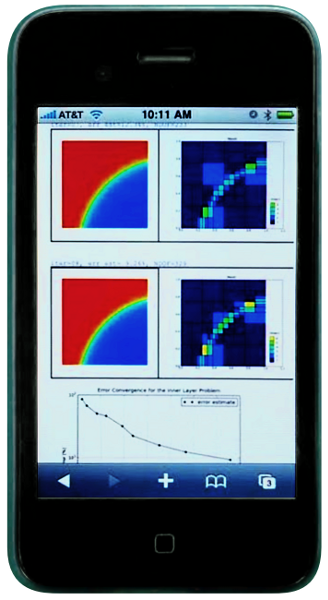

Interactive Web Accessibility
- Interactive web usage. You can use Hermes (and other major open source FEM codes) remotely via any web browser, using the FEMhub Online Numerical Methods Laboratory. Your hardware will not be used as the online lab is powered by the University of Nevada, Reno (UNR) high-performance computing facility (Research Grid). In this way you can compute with Hermes using any platform that supports web browsing, such as an iPhone:

See the Hermes home page for more information. An overview of books,
journal articles, conference proceedings papers and talks about Hermes and adaptive hp-FEM can be
found in its publications section.